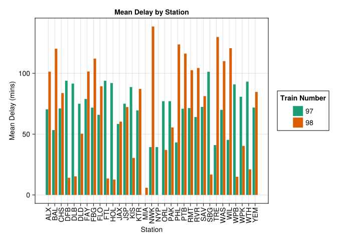

using HTTP
using Gumbo
using Cascadia
using DataFrames
using DataFramesMeta
using Dates
using Statistics
using CategoricalArrays
using CairoMakieRecently two things happened quite close together that started me on the journey to this post.
- First I have been planning on fiddling around and learning Julia for a while. I love R and that love will not change but I thought it was good to try something different.
- My mom took a train and it was super late! I started looking at the station and it seemed like it was always late.
So these two things lead me to this, pulling Amtrak data from the web using Julia. I do not claim to be an expert on Julia but I am learning and I wanted to share my journey, nor to I claim to be an expert at Web Scraping. Taking those things in account lets follow along.
Load Packages
First off I will load the Julia packages I am going to use. The first three all have to do with web scraping, and getting the data off the website. CairoMakie will be used to make the plot. All of the rest are for data wrangling. I already have all of these packages in this project environment so I just need to let the Julia REPL know to load them. If you are brand new to Julia this site really helped explain the idea of project environments to me. I also use VSCode along with the Julia extension which does a great job of handling the project environment.
Setting up the Web Scraping
Now that the packages are loaded, we can start setting up the web scraping. From my internet searching I found that Amtrak does have an API but it is quite challenging to use. I found this website Amtrak Status which does a great job of showing the data I was looking for. In this example I am just going to pull data for two trains, train 97 and train 98. You can see in the link I set those as the train numbers, and if you follow the link you will see it sets it up in a nice table to view the historical data. When then use the HTTP package to get the raw website data and then use Gumbo to parse the HTML into a table. The Cascadia package gives the various CSS selectors to help pull the info I want of the entire page. The page table does not have an ids but it is also the only table on the page. I was able to use the CSS Selector “tr” to get each row of the table into a vector. If we examine the third item in the rows vector we see that it has the information we want (the first two rows are headers for the table)
url = "https://juckins.net/amtrak_status/archive/html/history.php?train_num=97%2C98&station=&date_start=07%2F01%2F2024&date_end=07%2F31%2F2024";
resp = HTTP.get(url);
page = parsehtml(String(resp.body));
rows = eachmatch(sel"tr",page.root);
rows[3]Creating the DataFrame
Now that each row of the table is stored in a vector we need to rebuild the table into a dataframe in Julia. First I am intializing an empty dataframe by creating each column that will hold data. The column names match those of the header in the table on the website. Then I loop through each item in the rows vector. The text variable is a vector of all the td elements in the row. If the text vector is not empty and has more than one item in it, then we loop through the items and push the text into the row_data vector. Finally we push the row_data vector into the dataframe created prior to the loop. By having the nested if I can remove the footer column at the end of the table from the website. The website table header uses a different CSS selector than the rest of the table but the footer does not. At the end of the loop I now have the same table that is on the website but stored as a dataframe in Julia.
# create empty DataFrame and then populate it with the table from website
df = DataFrame(train = String[], origin_date = [], station = String[], sch_dp = [], act_dp = String[], comments = [], s_disrupt = [], cancellations = [])
for i in rows
text = eachmatch(Selector("td"), i)
row_data = []
if !isempty(text) && length(text) > 1
for item in text
push!(row_data, nodeText(item))
end
push!(df, row_data)
end
endCleaning the DataFrame
Coming from R I am quite familiar with data cleaning using dpylr and the rest of the tidyverse packages. When looking at options I really liked what the DataFramesMeta package brings, so I have used that here to get the data were I want it. I first filter out any trains that have a service disruption as well as any that are blank in the departure column. Next I select only the station, train, and the comments column. I originally tried using the two departure columns but was having an issue with trains that arrived at the stations on day but then left the next. These were causing the delay to be quite large as it was calculating as if it actually left before arriving. The comments column has what I needed I just had to pull the string out and convert it to a numeric. After selecting the columns I first create the delay column. This pulled the comment string out of the comment column only if it contains Dp: as this indicates how late or early the train left. Next I am pulling out the time in minutes and hours from the delay string and converting those numbers to integers. The total delay column adds the minutes and hours together and if the word late is not in the column it will convert the number to negative. A negative delay in this case means the train left early. Finally I transform the columns to categorical so that they are easier to work with in the future. You can notice that for the last transformation I could not figure out how to select two columns using the transform macro. Also for those coming from R note the .=> this is the broadcast operator and it lets Julia know to perform the action on the entire vector (I think I am explaining this right!) I end the block by showing the first 5 rows of the modified dataframe.
mod_df = @chain df begin
@rsubset :act_dp != "" && :s_disrupt != "SD"
@select :train :station :comments
#can't perform match if there is nothing there
@rtransform :delay = occursin(r"Dp:", :comments) ? match(r"Dp:.*", :comments).match : ""
@rtransform :min = occursin(r"min", :delay) ? parse(Int,match(r"([0-9]*) min", :delay)[1]) : Int(0)
@rtransform :hour = occursin(r"hr", :delay) ? parse(Int,match(r"([0-9]*) hr", :delay)[1]) *60 : Int(0)
@rtransform :total_delay_mins = :min + :hour |> x -> occursin(r"late", :delay) ? x : x *-1 #if word late does not appear, train left early
transform([:station, :train] .=> categorical, renamecols = false)
end
first(mod_df, 5)5×7 DataFrame
| Row | train | station | comments | delay | min | hour | total_delay_mins |
|---|---|---|---|---|---|---|---|
| Cat… | Cat… | Any | Abstract… | Int64 | Int64 | Int64 | |
| 1 | 97 | RMT | Dp: 1 min late. | Dp: 1 min late. | 1 | 0 | 1 |
| 2 | 98 | FLO | Ar: 7 min early. | Dp: On time. | Dp: On time. | 0 | 0 | 0 |
| 3 | 98 | KTR | Dp: 12 min late. | Dp: 12 min late. | 12 | 0 | 12 |
| 4 | 97 | PTB | Dp: 6 min late. | Dp: 6 min late. | 6 | 0 | 6 |
| 5 | 97 | RVR | Ar: 8 min late. | Dp: 5 min late. | Dp: 5 min late. | 5 | 0 | 5 |
Grouping and Summarizing
Now that I have the data I want, I want to group and summarize to create some graphs. Again using DataFramesMeta and the by keyword I can group by the train and station columns and then create the mean, median, max, and min columns. This action felt very to summarize in dplyr. DataFramesMeta does allow you to do the grouping and combining as two separate steps, but the by keyword combines in into one step. I then ordered by the station column and then by the train column. I then created a column that shows the difference in the mean delay between the two trains. I didn’t end up using this for now but I might make something with it later. Last I created two columns that contain the level code for the station and train columns. I will talk about the reason for this in the next section. The function levelcode is from the CategoricalArrays package and it creates an integer column that matches the level of the categorical name. Last I display the first 5 rows of the dataframe.
gd = @chain mod_df begin
@by _ [:train,:station] begin
:mean = Float32[Statistics.mean(:total_delay_mins)]
:median = Statistics.median(:total_delay_mins)
:max = maximum(:total_delay_mins)
:min = minimum(:total_delay_mins)
end
@orderby :station :train
@groupby :station
@transform :diff = [missing; diff(:mean)]
@rtransform _ begin
:station_code = levelcode(:station)
:train_code = levelcode(:train)
end
end
first(gd, 5)5×9 DataFrame
| Row | train | station | mean | median | max | min | diff | station_code | train_code |
|---|---|---|---|---|---|---|---|---|---|
| Cat… | Cat… | Float32 | Float64 | Int64 | Int64 | Float32? | Int64 | Int64 | |
| 1 | 97 | ALX | 70.4 | 50.0 | 287 | 0 | missing | 1 | 1 |
| 2 | 98 | ALX | 101.387 | 77.0 | 399 | -16 | 30.9871 | 1 | 2 |
| 3 | 97 | BAL | 53.3333 | 27.0 | 267 | 3 | missing | 2 | 1 |
| 4 | 98 | BAL | 120.226 | 104.0 | 414 | 0 | 66.8925 | 2 | 2 |
| 5 | 97 | CHS | 71.1 | 53.0 | 286 | 0 | missing | 3 | 1 |
Plotting
Coming from R and the ggplot package (also having played around a bit in Plotly for R) there was a rather step learning curve to Makie! I do feel there is a ton of flexibility in Makie, but learning to use it is a beast, and was probably the hardest part of this whole thing. The first challenge was Makie does not like categorical variables (at least for barplots, don’t know if this is always true), thus the need for using the level codes so I could pass a numerical vector to the x axis. I am then able to label that axis with the categorical labels. Makie does also allow you to just call the barplot function without all the other set up, and it will automatically create the figure and axis, however I wanted to do it manually and really build up the graph. First step was setting a color gradient, I used Dark2 from the ColorBrewer schemes, just as a personal preference for one I really like. Next up I create the figure. Directly from the Makie docs, The Figure is the outermost container object. I could pass some arguments to the Figure constructor, and change size or colors, but for this one I just left everything as the defaults. Next up is creating the axis. I placed it at position 1,1 within the previously created figure. I also pass labels for the x and y axis, a title, and then the labels for the xticks. The label roation is in radian so pi/2 rotates the labels 90 degrees. Next I generate the barplot. Not the ! in the function call allows for plotting on an existing axis. (More info on the Bang Operator) Last I set up Labels and Colors for the Legend, and the place the Legend at position 1,2 of the existing figure.
colors = cgrad(:Dark2_6)
f = Figure();
ax = Axis(f[1,1], xlabel = "Station", ylabel = "Mean Delay (mins)", title = "Mean Delay by Station", xticks = (1:length(levels(gd.station_code)), levels(gd.station)), xticklabelrotation = pi/2)
barplot!(ax, gd.station_code, gd.mean, dodge = gd.train_code, color = colors[gd.train_code])
labels = ["$i" for i in unique(gd.train)]
elements = [PolyElement(polycolor = colors[i]) for i in unique(gd.train_code)]
Legend(f[1,2],elements, labels, "Train Number")
f
Conclusion
There is still a lot that could be done with this data set, and I am interested to keep playing around with it to see what kind of insights I could gather. Overall I learned a lot about Julia but as I learned with R there is always more to learn! I look forward to see where this journey takes me.
Reuse
Citation
BibTeX citation:
@online{belanger2024,
author = {Belanger, Kyle},
title = {Learning {Julia} by {WebScraping} {Amtrak} {Data}},
date = {2024-08-27},
langid = {en}
}
For attribution, please cite this work as:
Belanger, Kyle. 2024. “Learning Julia by WebScraping Amtrak
Data.” August 27, 2024.